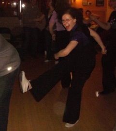 Riikka Antikainen on ollut onnellinen lindy hoppari vuodesta 2006. Pian mukaan tulivat myös authentic jazz, balboa, valmennus ja muu swing-häröily, joita Riikka on käynyt tekemässä Amerikassa asti. Nykyään Riikka valmentaa lindy hoppia Helsingissä Rock'n'swing Dance Club Comets ry:ssä. Riikka tykkää opettaa varsinkin rytmiä ja yhdessä tanssimista (ja twistejä), minkä lisäksi hän on innokas sossutanssija ja DJ.
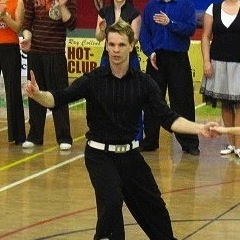 Jani Antola on pitkän linjan paritanssija, jonka intohimona on kehittää tanssiaan perusteista lähtien. Kun perusasiat ovat kunnossa, ovat sovellukset helpompia. Jani on kisaillut koti- ja ulkomailla pääasiassa boogie woogiessa, ja keskittynyt viime vuosina pääasiassa lindy hopiin. Jani on tinkimätön harjoittelija ja iloinen kaveri, joka tuo tanssiin sekä sen kehittämiseen työkaluja myös muualta liikunnasta. Janin tunneilla harjoittelukin on kivaa!
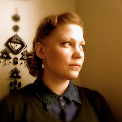 Anni Heikkinen on tanssinopettaja Oulusta. Päätyönään hän opettaa tulevia tanssinopettajia Oulun seudun ammattikorkeakoulussa. Swing-musiikki ja lindy hop ovat Annille jatkuvan inspiraation ja itseilmaisun lähteitä.
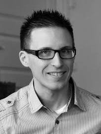 Topias Kaitilan ensikosketus rock'n'swing-tansseihin on Swing Teamistä vuodelta 2003. Hän on treenannut aktiivisesti osallistuen workshoppeihin sekä Suomessa että ulkomailla. Kilpaileminen on ollut Topiaksella mukana lähes alusta alkaen ja hänen meriitteihinsä kuuluu muun muassa vuoden 2010 lindy hopin Suomen mestaruus ja kakkossija Fuskusta. Tanssi on ollut Topiakselle elämäntapa ja pääsääntöisesti hän valmentaa pääasiassa Turussa.
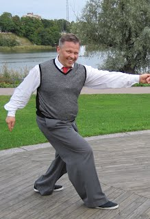 Margo Kangasniemen sai innostus vanhaan rytmimusiikkiin aikanaan tanssitunneille ja sukeutuipa swing-aktiivi, joka tanssii, valmentaa, reissaa, järjestää ja touhuaa tapahtumissa. Joskus lupautuu hulluuttaan jopa esityksiin. Viime aikoina Margo on valmentanut Helsingissä muun muassa lindy hopia. Valmennuksessa korostuvat perusasiat ja selkeys: Motivaatio, luonnollinen liike ja luovuus. "Hyvässä ilmapiirissä syntyy hyviä juttuja!"
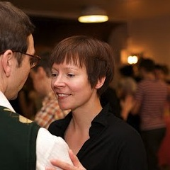 Minna Marttila innostui swing-tansseista 1999 ja seuraavana vuonna huomasi rakastavansa tanssimisen lisäksi myös kilpailemista, esiintymistä ja valmentamista. Tanssikisoissa on kultaa tullut muun muassa näistä: Snowball Tournament 2003 (Viro), Herräng Fast Feet Jack'n'jill 2003 (Ruotsi), Snowball Lindy Hop Jack'n'jill 2006 (Ruotsi) ja Snowball Balboa Jack'n'Jill 2007 (Ruotsi). Esiintymisissä tutuiksi ovat tulleet niin Hartwall Areena, Finlandia talo kuin Gloria. Kesän taas lähestyessä Minna pitää suurimpana tanssisaavutuksenaan Puistotanssien (Lindy in the Park) järjestämistä. Alkamassa on jo yhdeksäs puistotanssikesä stadissa!
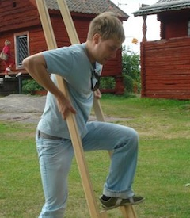 Mikko Multanen aloitti lindyn vuonna 2005 ja seuraavana vuonna mukaan tulivat myös balboa ja authentic jazz. Juuri vuodesta 2006 hän on myös käynyt eri tanssitapahtumissa ympäri maailmaa. Mikko on opettanut lindyä, balboaa ja authentic jazzia vuodesta 2007, pääasiassa Helsingissä, mutta myös muualla Suomessa. Mikko opettaa tunneilla varsinkin rytmiä ja parityöskentelyä ja nauttii lindyssä eniten sen vapaudesta.
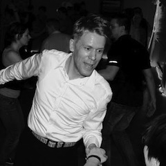 Aina täysillä, myös päin mäntyä! Aleksis Nokso-Koivisto on Suomen tunnetuimpia lindy hop -nimiä. Hän on vuodesta 1995 tanssinut lähes kaikkia rock'n'swing-tansseja sekä muita tansseja ja hakee vaikutteita tanssiin ja valmennnukseen musiikista sekä muista esiintyvistä taiteista. Opettajana ja valmentajana Aleksiksen tunteja luonnehtii fyysisyys. Aleksiksen mielestä tanssimaan oppii tanssimalla. Aina on kuitenkin oltava ajatus mukana: vain hyvä harjoitus voi tehdä mestarin.
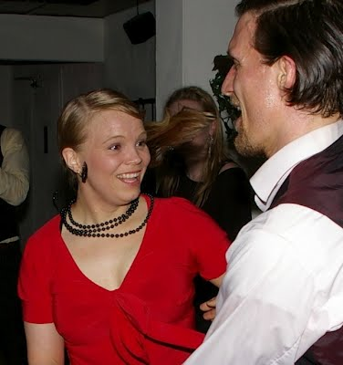 Hanna-Reetta Nokso-Koivisto on yli kymmenvuotisen tanssiuransa aikana ehtinyt kokeilla monta lajia, joista voiton vei lindy hop monipuolisuutensa ja haastavuutensa ansiosta. Jokainen tanssi on ainutlaatuinen juuri siinä hetkessä tapahtuva kokemus. Elinikäisenä oppijana Hanna-Reetalla on loputon jano käydä haastamassa itseään kaikenlaisissa valmennuksissa niin kotimaassa kuin ulkomaillakin, aina voi oppia jotain uutta! Tanssissa ja opetuksessa Hanna-Reetalla on ohjenuorana tanssiparin ja musiikin välille muodostuva "pyhä kolminaisuus". Jokaisella näistä kolmesta on oma tärkeä roolinsa ja kaikki vaikuttaa kaikkeen. Parin välisen kommunikaation lähtökohtana on oman kehon tuntemus ja hallinta.
Päivi Perttusen kuva ja kuvaus ovat tulossa pian.
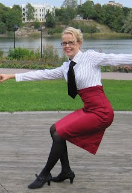 Heidi Pohjola aloitti tanssimisen vuonna 1995 vakio- ja latinalaistansseilla, joiden parissa kilpalattioita tuli kulutettua reilusti yli kymmenen vuotta. 2000-luvun alussa mukaan tulivat lavatanssit sekä rock'n swing -lajit. Myös niissä veri veti kilpalattioille ja plakkarissa on muun muassa kolme suomenmestaruutta lindy hopissa. Heidi on omien sanojensa mukaan eläköitynyt kilpalattioilta, mutta jatkaa tanssin parissa sekä opetuspuolella että ahkerana sosiaalitanssijana. Tänä keväänä hänet voi kuitenkin bongata Pakko tanssia -ohjelmasta TV2:lta!
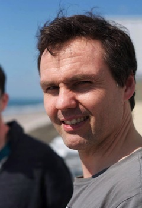 Saku Päivärinta aloitti tanssiharrastuksen 'vanhana', kolmevitosena. Aluksi ohjelmassa oli hieman lavatansseja, mutta vuonna 2007 hän tutustui swing-tansseihin ja homma lähti heti lapasesta. Siitä lähtien hän on osallistunut tietoja ja taitoja ahmien swing-valmennuksiin ja -tapahtumiin ensin kotimaassa ja viime vuodet aktiivisesti maailman leirejä kiertäen, Euroopassa ja muutamaan otteeseen USA:ssa. Yhä jatkuvan innostuksen vallassa hän myös valmentaa Lindyä ja Balboaa pääsääntöisesti Helsingissä mutta myös tarvittaessa muuallakin. Muuhun ohjelmaan kuuluu stepin opiskelu sekä argentiinalainen tango. Sakulle tunnusomaista on innostunut ote sekä sosiaalitanssin ylläpitäminen, jatkossa varmaan myös yhä enemmän koreografiat ja esitykset.
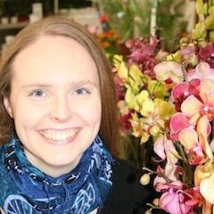 Laura Robinson on helsinkiläinen tanssija, valmentaja sekä järjestäjä, joka rakastaa swing-tanssien iloisuutta ja leikkisyyttä. Hän opettaa lindy hoppia, balboaa ja vähän bluesiakin. Hänen opetuksessaan yhdistyvät selkeä ja monipuolinen tekniikan harjoittelu sekä hauska ja luova kokeilu.
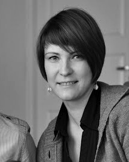 Terhi Vuovirta on aloittanut tanssiharrastuksensa lapsena. Ensin lajeina oli soolotanssit, joita oli mm. showtanssi ja hiphop. Useamman vuoden tauon jälkeen, vuonna 2002, Terhi löysi boogie woogien. Samaisena vuotena Terhi aloitti valmentamisen. Muutamaa vuotta myöhemmin Terhi menetti sydämmensä lindy hopille. Tanssilajeihin kuuluu tällä hetkellä myös west coast swing ja balboa. Oppia Terhi on hakenut usealta Euroopan leiriltä (mm. Ruotsi, Sveitsi, Italia ja Unkari) ja on Terhi kerennyt valmentamaan Ameriikoissakin asti.